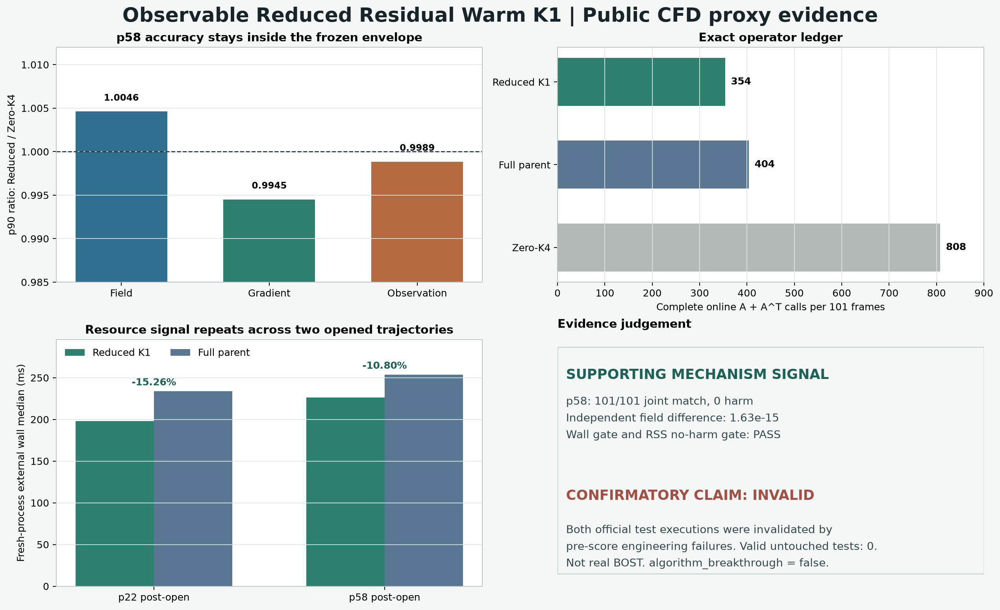

{kind=link}
支持性 PASS独立复算 PASS
算法本身显示可复现的加速潜力
p58 的 field / gradient / observation 兼容门、harm 门、调用账、wall 门和 RSS no-harm 门同时通过。独立场最大差为 1.63e-15。
只在 51 个偶数帧运行 compact dual CNN；50 个奇数帧用部署可见 observation residual 在 fit-only rank-199 子空间内重建 warm lift，再进入同一个 strict CGLS K1。结果显示方法有稳定加速信号，但两次官方 test 首次执行均因流程错误失效，因此当前不是确认性突破。
绿色部分是已经运行并独立复算的数值；红色部分是不能被漂亮数值覆盖的实验设计失败。

p58 的 field / gradient / observation 兼容门、harm 门、调用账、wall 门和 RSS no-harm 门同时通过。独立场最大差为 1.63e-15。
p22 在原始 pair 路径失败；p58 在首次 native proposal 前被非连续数组拒绝。两条轨迹后续结果都只能作 post-open diagnostic。
没有缩短 CGLS、没有偷看 truth、没有给候选额外迭代。变化只发生在奇数帧 warm lift 的生成方式。
x_even = K1(y_even, A^T G_theta(y_even)); x_odd = K1(y_odd, h_even + mean_h + U C(y_odd - A h_even - mean_y))
| 在线方法 | A | A^T | 总调用 | 相对 Reduced |
|---|---|---|---|---|
| Observable Reduced Warm K1 | 202 | 152 | 354 | 基准 |
| Full-parent Warm K1 | 202 | 202 | 404 | 多 14.12% |
| Zero-CGLS K4 | 404 | 404 | 808 | 多 128.25% |
正式 package 用 thin SVD 与 measurement-space SVD ridge；验证路径从 fit observations 重新生成 proposals，再用 sample-space 特征分解、QR 和正规方程 ridge 重建候选。
| 复核项 | 最大差 | 状态 |
|---|---|---|
| 三维候选场 | 1.6306400674181987e-15 | PASS |
| 全部兼容指标 | 4.440892098500626e-16 | PASS |
| wall / RSS 统计 | 0.0 | PASS |
| 在线调用账 | 202A + 152A^T | PASS |
| pair checksums 前后 | unchanged | PASS |
在两条打开后的公开 PoolFire CFD proxy 轨迹上，固定 Reduced Warm K1 的 wall 信号重复出现；p58 在冻结兼容包络内无 harm，并被第二数值路径复现。
不能说 untouched test 通过、算法已泛化、物理同精度成立、真实 BOST 加速、全球首创、SOTA 或论文已经成功。
algorithm_breakthrough=false · confirmatory_valid=false · real_BOST=false · paper_success=false